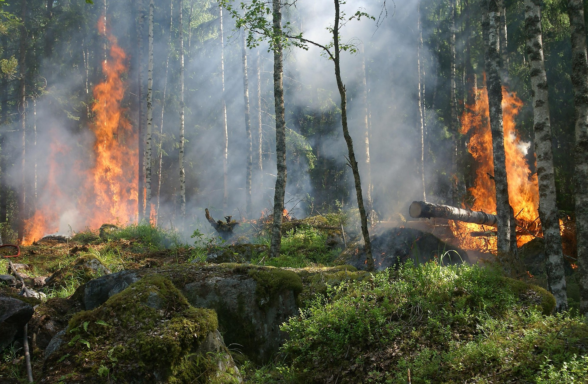
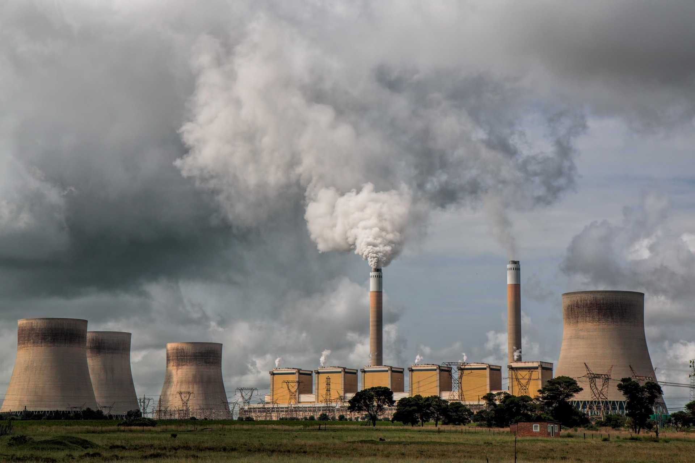
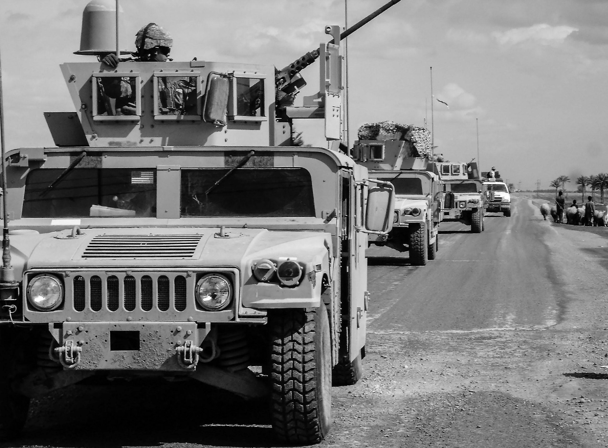
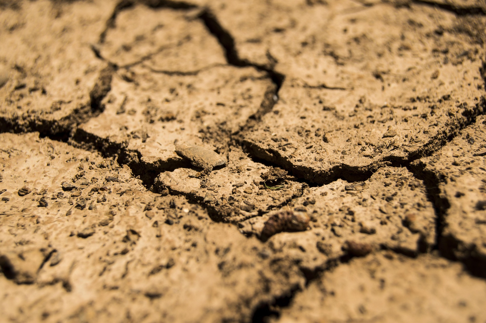
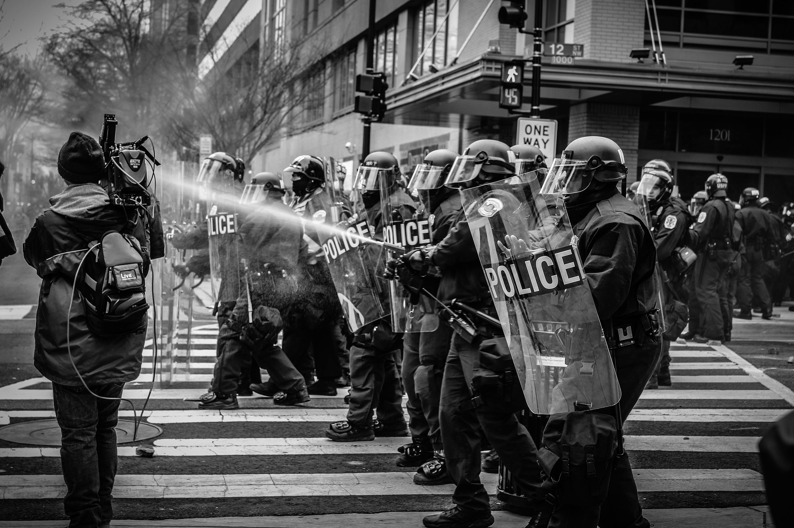
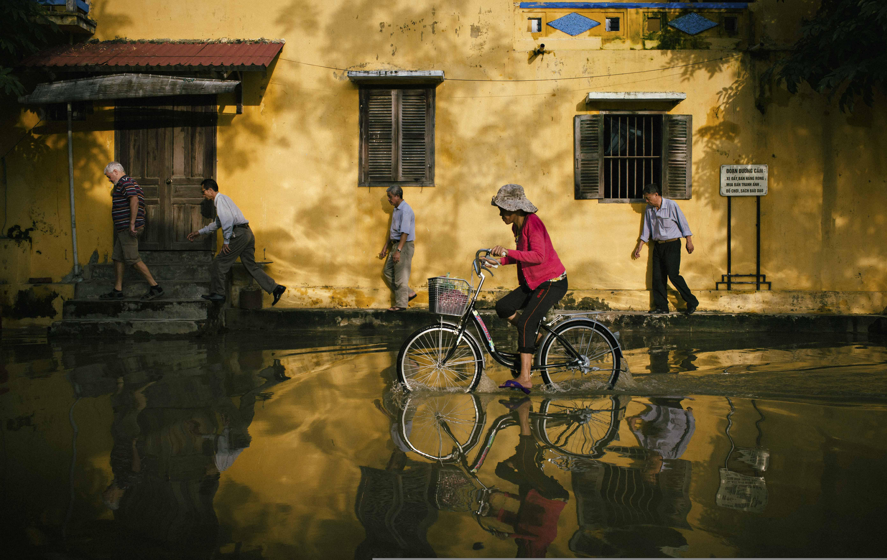

● LIVE
Global Stability Under Pressure As Multiple Regional Crises Escalate
International leaders are preparing for emergency talks amid
simultaneous challenges involving food security, energy
infrastructure, migration, public health, and resource access.
Analysts warn the interconnected nature of these crises may
accelerate instability across multiple continents.
Updated: 21:00 UTC
FOOD EXPORTS FAIL ACROSS SOUTH AMERICA

Agricultural regions report severe crop failures following years
of drought, soil degradation, and climate disruption. Export
restrictions are driving international food prices higher.
OFFLINE POLICE: ARE PEOPLE DISAPPEARING IN THE NIGHT?

The Offline Police have long been responsible for enforcing digital compliance, but recent reports of overnight disappearances have sparked growing public concern. Officials maintain that all actions are lawful, despite mounting questions from families.
TRADING SECURITY FOR FREEDOM, THE OFFLINE POLICE CONTROL OUR DATA?
As one of the nation's most powerful agencies, the Offline Police oversee every citizen's digital identity. While the organisation insists its powers keep society safe, critics argue that personal freedom has become the price of security.
POWER GRID COLLAPSE ACROSS WESTERN EUROPE

Large-scale outages continue across multiple countries as
interconnected energy systems struggle to recover from cascading failures.
ARMED CONFLICT ESCALATES IN EAST AFRICA

The withdrawal of peacekeeping forces has contributed to
increasing instability and mass civilian displacement.
SOUTHEAST ASIA COASTLINES ABANDONED
Millions have relocated inland after repeated flooding and
rising sea levels rendered coastal settlements uninhabitable.
MIDDLE EAST WATER ACCESS DISPUTES TURN VIOLENT

Critical reservoir shortages have intensified tensions between
neighbouring states competing for diminishing water resources.
NORTH AMERICAN CITIES FACE ROLLING BLACKOUTS
Industrial production continues to decline as energy shortages
disrupt infrastructure and economic activity.
CENTRAL EUROPE REINFORCES BORDERS

Military deployments increase amid significant refugee
movements from surrounding crisis regions.
SOUTH ASIA HEALTH SYSTEMS OVERWHELMED
Hospitals across major population centres report severe strain
following successive waves of infectious disease outbreaks.
WEST AFRICAN COASTAL ECONOMIES COLLAPSE

The disappearance of regional fish stocks has devastated local
industries and threatened food security.
ANTARCTIC RESEARCH STATIONS ABANDONED
International scientific missions have withdrawn as geopolitical
tensions rise over strategic resources.